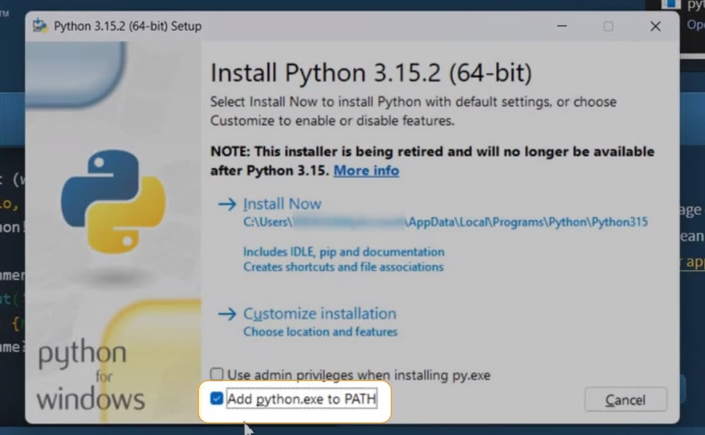
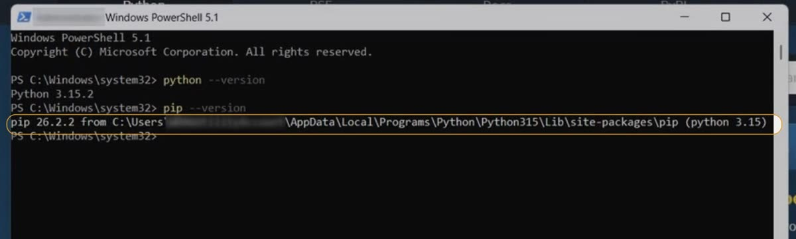
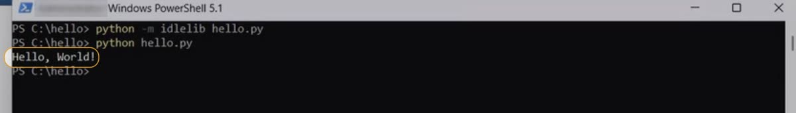
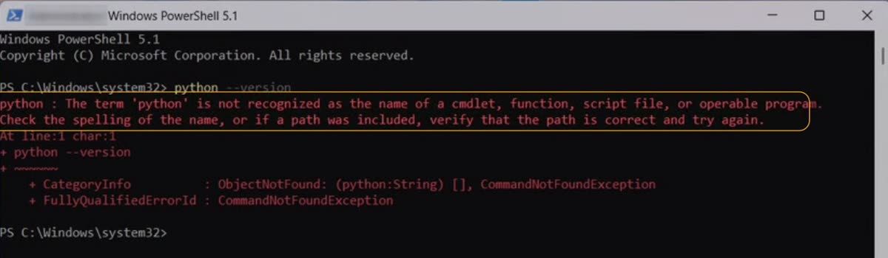
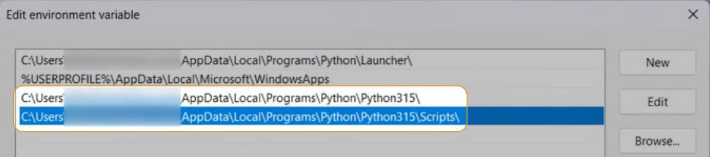

What you need
Most beginners meet the same first error: 'python' is not recognized, and it comes from one missed tick in the installer. So we install Python on Windows with that tick, and then we prove that it really works.
Before you start, you need three things:
- a Windows PC,
- an internet connection,
- about 10 minutes.
Python is free, and you do not need an account anywhere to get it.
Step 1: Download the installer
Go to python.org's downloads page for Windows. On the home page, pointing at Downloads opens the same choice in a small panel.
You will see two kinds of download. The big button is the new Python install manager, a tool that installs and updates Python versions for you.
We take the classic installer instead: the latest Python 3, for 64-bit Windows. When we recorded, that was python-3.15.2-amd64.exe, and it downloaded in a few seconds.
Step 2: Install, with the PATH tick
Open the file you downloaded. The first screen carries a note: this installer is being retired after Python 3.15, so in later versions you may see only the install manager.
Now the step that matters most. At the bottom, tick Add python.exe to PATH.

Why does this one tick matter? PATH is the list of folders Windows searches when you type a command. With the tick, Python's folder joins that list, and then any terminal can find Python from any folder.
Click Install Now. It takes about a minute on a normal PC. One of the steps you see go by is Add to Path: your tick made that happen.
When it says Setup was successful, click Disable path length limit. Windows otherwise stops at folder paths longer than 260 characters, and some programs need more. Then click Close.
Step 3: Check Python and pip
Open a new PowerShell window. A window that was already open still holds the old PATH; only a new one reads the new list. Then type these two lines, one at a time:

Your numbers may be newer, and that is fine, because what matters is that both answer. The second one, pip, is Python's tool for installing libraries, and you will use it often.
Step 4: Run your first program
A version number proves Python is there. A program you wrote proves it runs. Make a folder called hello, and open IDLE, Python's own editor, on a new file in it:
IDLE opens an empty file called hello.py. Type this one line, then save with Ctrl+S:
Close IDLE, and run the file from PowerShell:

There it is: Hello, World! Python works.
Forgot the tick? Fix "python is not recognized"
Say you clicked Install Now without the tick. Python is installed, but nothing told Windows where it is. So PowerShell answers python --version with an error:

You do not need to reinstall. We add Python's folder to PATH ourselves, in five steps.
Open the environment variables
Press the Windows key and type environment. Open Edit the system environment variables, then click Environment Variables.
Edit your own Path
In the top list, the variables for your user, select Path and click Edit.
Add Python's folder
Click New and type the folder the installer showed under Install Now. It sits inside your user folder: AppData\
Add its Scripts folder
Now a second row: click New again and type the same folder with \Scripts at the end. That is the folder where pip lives.

Save, and open a new PowerShell
Click OK three times, once for each window. Close the old PowerShell, because it still holds the old PATH. In a new PowerShell window, run python --version and pip --version again. Both answer now, so the fix worked.
To keep for later: three messages you may meet after an install, and what each one means.
| What you see | What it means, and the fix |
|---|---|
| 'python' is not recognized | Python's folder is not on PATH. Open a new PowerShell first; if it still fails, add both folders as above. |
| 'pip' is not recognized, but Python answers | Only the Scripts folder is missing. Add the row ending in \Scripts. |
| It works in a new window, but not in an old one | The old window still holds the old PATH. Close it and use the new one. |
What's next
That is Python, installed and checked on your own PC. Now it needs something to build.
- To learn Python by building things, start with our Python series, Python by Building. It starts from a Python installed just like this one.
- To build chatbots, our chatbot series uses this same Python.
The takeaway
- Tick Add python.exe to PATH before you click Install Now. It saves you the fix.
- Check in a new PowerShell:
python --versionandpip --versionmust both answer. - Missed the tick? Add the Python folder and its Scripts folder to your user Path, then open a new PowerShell.
One question for you: which step took you the longest? Tell me under the video on YouTube.
References
Where each step on this page comes from. Checked on 13 Nov 2026.
- Python Software Foundation — Python Releases for Windows. The classic installer for the latest Python 3, and the Python install manager. link
- Python documentation — Using Python on Windows. The installer's options: Add python.exe to PATH, Disable path length limit, and the install manager that replaces the installer. link
- Microsoft — Maximum path length limitation. Windows paths stop at 260 characters unless long paths are enabled. link
- My own install — recorded for the video, November 2026, a fresh Windows 11 setup. Python 3.15.2 (64-bit); python --version prints Python 3.15.2 and pip --version prints pip 26.2.2; the install folder is AppData\Local\Programs\Python\Python315 inside the user folder.
New chapters and episodes come out every week. Follow along on YouTube or the WhatsApp channel. Questions? Ask under the video on YouTube; I read every comment.